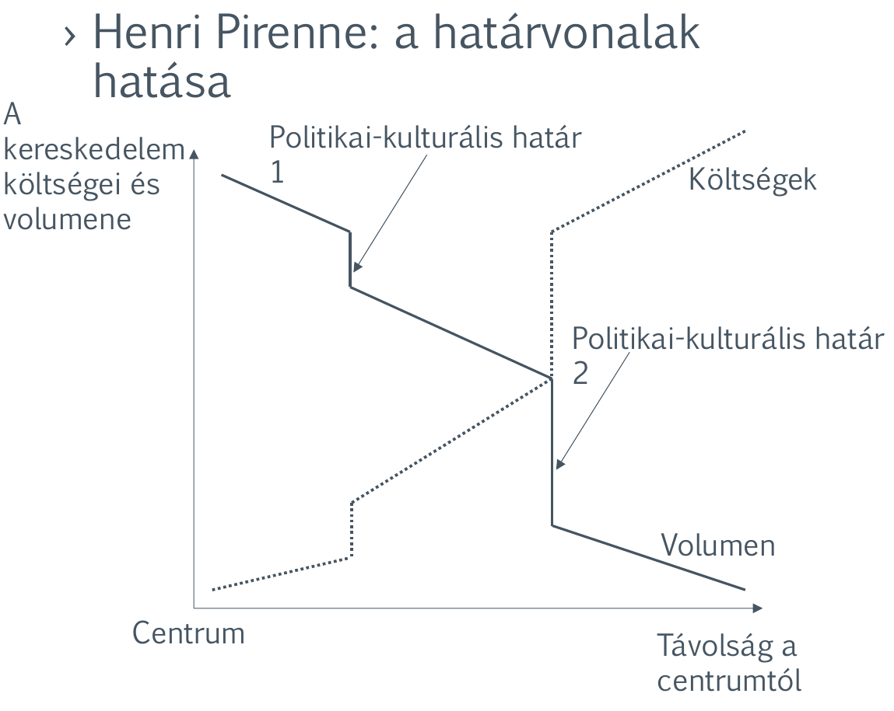
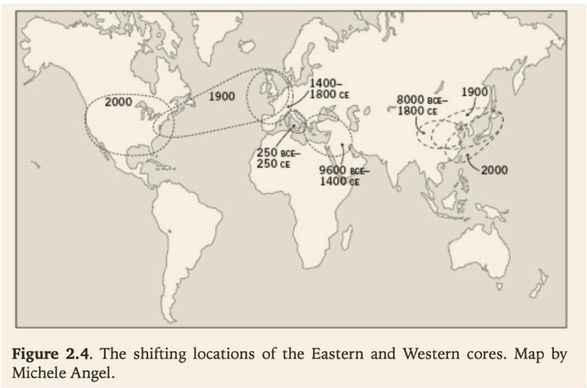
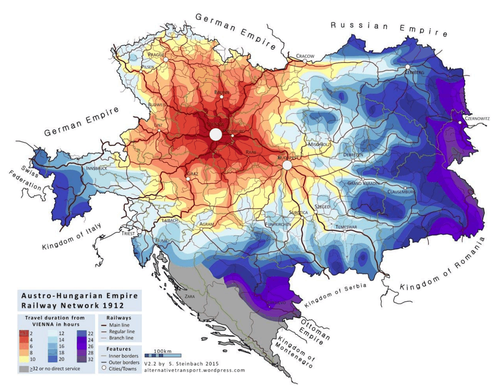
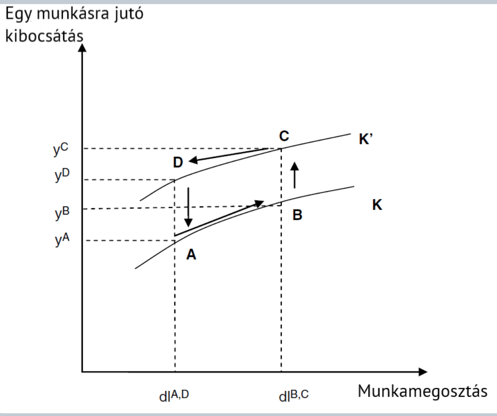
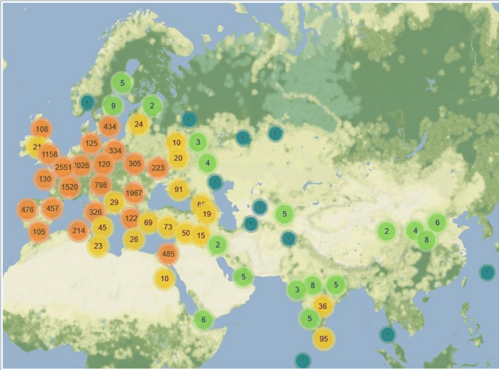
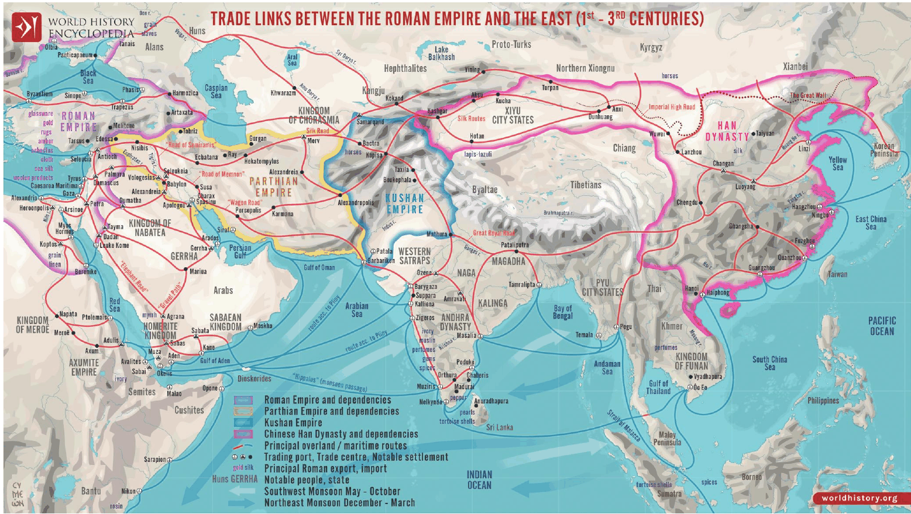
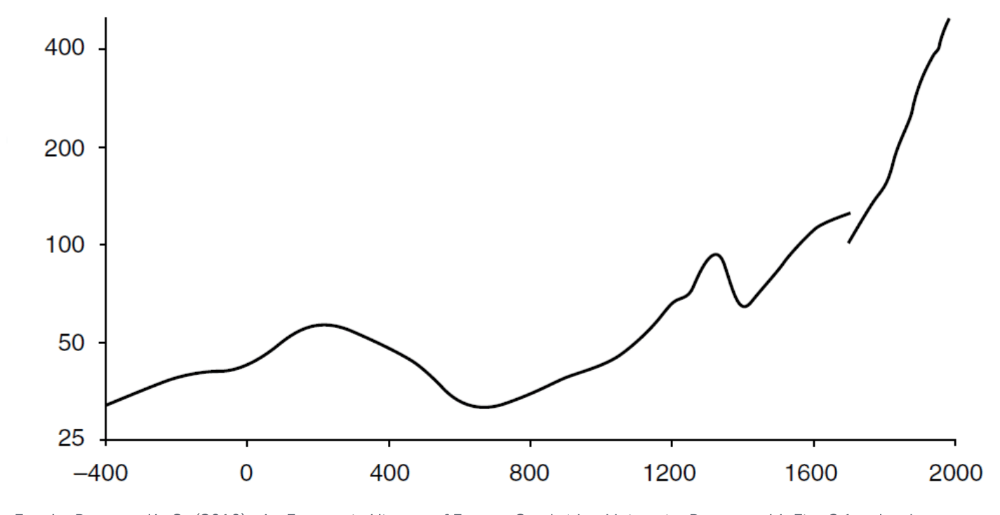
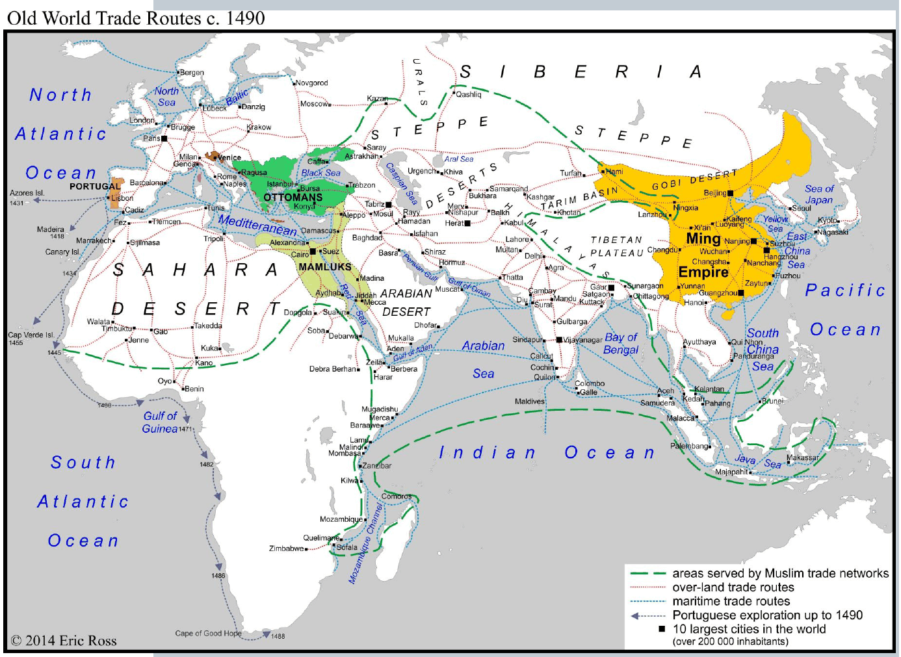

2. fejezet · diák: 36–51
A kereskedelem hasznai
Miért gazdagabbak azok, akik kereskednek? Az előző fejezetben láttuk, hogy a tartós növekedés fő forrása a hatékonyság. Most megnézzük az egyik legrégebbi hatékonyságnövelő eszközt: a cserét.
Nyitó eset: a konténer 36–37. dia
Az 1950-es évekig minden árut fadobozokban, ládákban, zsákokban szállítottak. A mozgatásuk körülményes volt: a hajók több időt töltöttek a kikötőben a ki- és berakodással, mint az óceánon. Ráadásul a ládákból nagyon könnyű volt lopni.
1956-ban Malcolm McLean amerikai szállítmányozó bevezette az egységes méretű konténert. Néhány év alatt:
- egy tonna áru ki- és berakodásának költsége 5,83 dollárról 0,16 dollárra esett;
- az óránként megmozgatható áru 1,6 tonnáról 30 tonnára nőtt;
- a nagy szállítók úton lévő árukban fekvő pénze a felére csökkent;
- a hajók egyre nagyobbak lettek, és kevesebb rakodókikötő kellett;
- a dokkmunkások száma drasztikusan visszaesett – és vele együtt az érdekérvényesítő képességük és a sztrájkok száma is.
Egy 2013-as tanulmány szerint csak a konténer kb. nyolcszorosára növelte a fejlett országok közötti kereskedelmet – sokkal többel, mint amennyit a GATT-tagság hozott.
Egy egyszerű fémdoboz tehát többet tett a világkereskedelemért, mint a nemzetközi vámcsökkentési megállapodások. Hogyan lehetséges ez? És miért lesznek gazdagabbak azok, akik többet kereskednek?
A fejezet kérdése: mitől lesz egy közösség gazdagabb attól, hogy kereskedik – és ha a kereskedelem ennyire hasznos, miért nem kereskedünk korlátlanul?
Útiterv
A konténeres példa egyúttal azt is mutatja, hogy a kereskedelem haszna nem oszlik meg egyenlően: a fogyasztók és a szállítók nyertek, a dokkmunkások – munkahelyben és alkuerőben – veszítettek. Erre a fejezet végén visszatérünk.
✏️ Gondold végig – A konténer
- Miért nőtt meg ennyire a kereskedelem a konténer bevezetése után?
Mintaválasz
Mert drasztikusan csökkentek a kereskedelem költségei: olcsóbb és gyorsabb lett a rakodás, kevesebb lett a lopás, kevesebb pénz feküdt az úton lévő árukban. Ha olcsóbb az áru eljuttatása, több csere éri meg – ezért nőtt meg a kereskedelem volumene.
- Kik voltak a konténerforradalom vesztesei, és miért?
Mintaválasz
A dokkmunkások: a gépesített rakodáshoz sokkal kevesebb ember kellett, ezért sokan elvesztették a munkájukat, a megmaradók alkuereje és sztrájkképessége pedig csökkent. A kereskedelem összességében hasznos, de a nyereség és a veszteség nem ugyanazokat éri.
Belső és külső kereskedelem: a kereskedelem költségei 38–41. dia
A konténer a kereskedelem költségét csökkentette. Érdemes tehát először megnézni, mitől függ ez a költség. Két fajta távolság számít:
- Földrajzi távolság: minél messzebbre kell vinni az árut, annál drágább. Ez a költség a technológia változásával csökken (vasút, gőzhajó, konténer, repülő).
- Politikai-kulturális távolság: más nyelv, más pénz, más mértékegység, más jog, vámok – mind drágítják a cserét. Ez a költség az intézmények egységesülésével csökken.
A belga történész, Henri Pirenne ábrája ezt a kettőt egyszerre mutatja. A vízszintes tengelyen a centrumtól mért távolság van. Ahogy távolodunk, a költségek egyenletesen nőnek, a kereskedelem volumene egyenletesen csökken. A politikai-kulturális határoknál azonban ugrás van: a határon túl hirtelen megdrágul a csere, és a volumen hirtelen visszaesik.

Centrum: az a térség, ahol a gazdasági (és politikai, kulturális) tevékenység sűrűsödik, és amelyhez képest a távolságot mérjük. A centrum nem állandó: Ian Morris térképe szerint a nyugati centrum a Közel-Keletről a Földközi-tenger térségébe, onnan Északnyugat-Európába, végül Észak-Amerikába vándorolt; a keleti centrum évezredekig Kínában volt, majd a 20. században Japán és a kelet-ázsiai partvidék felé tolódott.

A földrajzi távolság költsége a technológiával csökken – ezt jól mutatják a holland szállítási költségek. Egy évszázad alatt minden szállítási mód töredékére olcsóbbodott, a légi szállítás pedig megfizethetővé vált:
| Szállítási mód | 1900 | 1950 | 1998 |
|---|---|---|---|
| Vasút | 40 | 18 | 9 |
| Belvízi hajózás | 15 | 7,5 | 6 |
| Közút | 110 | 40 | 20 |
| Légi | – | 750 | 44 |
A távolság azonban nem csak kilométer, hanem idő is. Hány óra volt vasúton Bécsig 1912-ben? Az Osztrák–Magyar Monarchia térképén a centrumtól (Bécstől) távolodva a színek a pirostól a lilán át a kékig váltanak: a peremvidékekről sokszor egy teljes nap kellett a fővárosig. Ahol sűrű volt a vasúthálózat, ott „közelebb” került a centrum.

✏️ Gondold végig – A kereskedelem költségei
- Melyik távolságot csökkentette a konténer, és melyiket egy közös valuta bevezetése?
Mintaválasz
A konténer technológiai újítás, a földrajzi távolság költségét csökkentette. A közös valuta intézményi egységesülés, a politikai-kulturális távolság költségét csökkenti (nincs átváltási költség és árfolyamkockázat).
- Mit mutatnak az ugrások Pirenne ábráján?
Mintaválasz
Hogy a politikai-kulturális határokon a kereskedelem költsége hirtelen megnő, a volumene hirtelen visszaesik. A határ tehát akkor is „drága”, ha a földrajzi távolság kicsi.
- Egy város centrumhoz közel fekszik, de egy másik országban. Egy másik város messze van, de ugyanabban az országban.
Melyikkel élénkebb a centrum kereskedelme?
Mintaválasz
Nem lehet egyértelműen megmondani: a közeli, de határon túli város a kis földrajzi, de nagy politikai-kulturális távolság miatt, a távoli belföldi város a nagy földrajzi, de kis intézményi távolság miatt kerül hátrányba. Pirenne ábrája szerint a határ okozta ugrás akár nagyobb is lehet, mint sok száz kilométer többletút.
Mi a kereskedelem haszna? Szakosodás és hatékonyság 42–43. dia
Most már tudjuk, mitől drága a kereskedelem. De miért éri meg egyáltalán? A válasz kulcsszava a szakosodás.
Szakosodás és munkamegosztás: mindenki arra a tevékenységre koncentrál, amiben (relatíve) a legjobb, és a többit cserével szerzi be. A kereskedelem ezért nem zéró összegű játszma: nem az egyik fél nyer a másik rovására, hanem együtt többet állítanak elő.
Ricardo példája – kis számokkal. Portugália és Anglia is bort és posztót készít. Egy egység előállításához szükséges munkaórák:
| Bor | Posztó | |
|---|---|---|
| Portugália | 80 | 90 |
| Anglia | 120 | 100 |
Portugália mindkettőben jobb (abszolút előny), de relatíve a borban: neki egy bor 80/90 ≈ 0,89 posztó árába kerül, Angliának 120/100 = 1,2 posztóéba. Szakosodás nélkül mindkét ország 1 bort és 1 posztót készít (összesen 2 + 2). Ha Portugália a 170 munkaóráját csak borra fordítja, 2,125 bort termel; ha Anglia a 220 óráját csak posztóra, 2,2 posztót. Ugyanannyi munkával több lett mindkét termékből – a többletet cserével megoszthatják. Ez a komparatív (relatív) előny elve.
A kereskedelem három haszna:
- Szakosodás (Smith, Ricardo): ha mindenki arra szakosodik, amiben relatíve a legjobb, együtt jóval többet állítanak elő, mert mindenki olyasmire fordítja a munkaidejét, amiben jó.
- Növekvő hatékonyság: aki szakosodik, gyorsabban tanul, a gyarapodó tudás pedig a technológia javulásához vezet.
- Erőforrás-ellátottság: egyes régiókban bizonyos erőforrások bőven vannak, ezért olcsók. A kereskedelem révén mások is olcsón hozzájutnak az ezekből készült javakhoz.
Közelítő-egységesítő hatás az intézményeken keresztül:
- Az egymással kereskedő közösségek intézményei egységesülnek (közös mértékegység, pénz, jog), és ez tovább csökkenti a külkereskedelem költségeit.
- A növekvő hasonlóság segíti a technológiatranszfert: a fejlettebbek technológiáját a kevésbé fejlettek könnyebben át tudják venni.
kereskedelem → egységesülő intézmények → olcsóbb kereskedelem és könnyebb technológiaátvétel → még több kereskedelem
A növekvő hatékonyság részletesebben
A második haszon a legfontosabb a hosszú távú fejlődés szempontjából, ezért nézzük meg közelebbről. A szakosodásból származó hatékonyságjavulás három elemből épül fel:
- Az egyéni készségek javulása – aki egész nap egy dolgot csinál, abban ügyesebb lesz. Ez az egyénhez kötött, nem adható tovább.
- Javuló technológia – a gyakorlatból új eljárások, jobb eszközök születnek.
- A jobb technológia széles elterjedése – technológiai szintugrás: az új eljárást mások is átveszik, és az egész gazdaság magasabb szintre lép.
A folyamat pozitív visszacsatolás: a mélyebb munkamegosztás jobb technológiát szül, a jobb technológia pedig még mélyebb munkamegosztást tesz lehetővé.
Az ábrán ez két görbével látszik. A K görbe a régi, a K′ az új technológiához tartozik: megmutatja, mennyit termel egy munkás a munkamegosztás mértékétől függően.
- A → B: ugyanazzal a technológiával mélyebb munkamegosztás – nő az egy munkásra jutó kibocsátás (egyéni készségek).
- B → C: a munkamegosztás közben javul a technológia, a gazdaság átlép a magasabb K′ görbére (szintugrás).
- A → D: a jobb technológia akkor is többet ad, ha a munkamegosztás nem mélyül tovább.
Az A → C vagy C → A útvonal mutatja a visszacsatolást: a munkamegosztás és a technológia egymást húzzák.

✏️ Gondold végig – Szakosodás és hatékonyság
- Miért nem zéró összegű játszma a kereskedelem?
Mintaválasz
Mert a szakosodással ugyanannyi munkából több termék lesz: mindenki arra fordítja a munkaidejét, amiben relatíve jó. A többlet megoszlik a felek között, így – legalábbis összességében – mindkét fél nyerhet.
- Egy ország mindent drágábban állít elő, mint a szomszédja. Érdemes-e a két országnak kereskednie?
Mintaválasz
Igen. Ricardo szerint nem az abszolút, hanem a relatív (komparatív) előny számít: a lemaradó ország is abban szakosodjon, amiben a legkisebb a hátránya. Így együtt többet termelnek, mint szakosodás nélkül.
- Hogyan vezethet a kereskedelem technológiai fejlődéshez?
Mintaválasz
Közvetlenül: a szakosodás gyorsítja a tanulást, a tanulás jobb technológiát szül, és az elterjed (szintugrás). Közvetetten: a kereskedelem egységesíti az intézményeket, a hasonlóság pedig megkönnyíti, hogy a kevésbé fejlett fél átvegye a fejlettebb technológiáját.
Globalizációk 44–46. dia
A globalizációt sokan a 20. század jelenségének tartják. A gazdaságtörténész azonban többes számban beszél róla: a világ már többször összekapcsolódott, és többször szét is esett.
Globalizáció: a világ különböző népei, gazdaságai közötti kölcsönös függés, amely az áruk, a tőke, a munkaerő, a technológia és a tudás áramlása révén jön létre és fokozódik. Első megjelenési formája általában az áruáramlás, vagyis a kereskedelem.
A globalizáció nagy hullámai:
- a tengeri népek kora előtt (kb. 3200 éve) – a bronzkori Földközi-tenger kereskedelmi hálózata;
- a hellenisztikus, majd a római korszak (kb. 2000 éve);
- a selyemút – kb. 600 éve a török hódítás rendezi át;
- a gyarmatosítás kora;
- a szabályokon alapuló rendszer – a 20. századi nemzetközi gazdasági rend.
A „tengeri népek” a Kr. e. 12. század körül támadták meg a Kelet-Mediterráneum államait. Az ezt követő bronzkori összeomlásban az addigi sűrű kereskedelmi hálózat szétesett – vagyis a globalizáció vissza is fordulhat.
A római kori kereskedelem kiterjedtségét a pénzleletek mutatják. A római érmék kincsleleteit nemcsak a Birodalom területén, hanem Észak-Európától Indiáig, sőt Kelet-Ázsiáig megtalálták.

A selyemút a Római Birodalmat kötötte össze Kínával: szárazföldi és tengeri útvonalak hálózata a Pártus Birodalmon, a Kusán Birodalmon és Közép-Ázsián át a Han-dinasztia Kínájáig. Az áruk – selyem, fűszer, üveg, nemesfém – mellett gondolatok, vallások és technológiák is vándoroltak rajta.

✏️ Gondold végig – Globalizációk
- Miért beszélünk globalizációkról, többes számban?
Mintaválasz
Mert a világ gazdaságai a történelem során többször is összekapcsolódtak (bronzkor, Róma, selyemút, gyarmatosítás, 20. század), és a kapcsolatok többször meg is szakadtak. A mai globalizáció egy hosszú sor legújabb hulláma.
- Miből tudjuk, hogy a római kereskedelem Indiáig ért?
Mintaválasz
A régészeti leletekből: római pénzérmék kincsleletei Indiában és Kelet-Ázsiában is előkerültek. Az érme ott csak akkor kerülhetett földbe, ha valaki fizetett vele – ez az áruáramlás nyoma.
Miért nem teljes a szakosodás? 47–51. dia
Ha a kereskedelemből meg lehet gazdagodni, miért nem törekszünk egyre mélyebb szakosodásra és egyre több kereskedelemre? Két korlát áll az útban.
- Az önzés csapdája: aki szakosodik, függővé válik a cserepartnerétől. Ha nem bízhat benne, hogy a partner tisztességesen cserél, inkább maga állít elő mindent.
- A piaci kereslet korlátja: akkor érdemes szakosodni, ha az általunk előállított termékekért annyit
fizetnek, hogy a szakosodás előttinél magasabb életszínvonalon élhessünk. Ehhez elég nagy piac kell.
A növekvő piac kulcsa:
- növekvő lakosság azon a piacon, ahol a kereskedelem zöme zajlik;
- növekvő vásárlóerő – több egy főre eső fogyasztás.
Az önzés csapdája a bizalom problémája: a mélyebb szakosodáshoz olyan intézmények kellenek (szerződések, bíróságok, közös szabályok), amelyek garantálják, hogy a csere tisztességes lesz. Ezért kapcsolódik szorosan a kereskedelem a 4. fejezet intézményeihez.
Nyitott kérdés, mi az állam szerepe a keresletkorlát oldásában. Az állam építhet utat, egységesítheti a mértékegységeket és a pénzt – a 20. században pedig a keynesi gazdaságpolitika közvetlenül a kereslet élénkítésével próbálkozott (13. fejezet).
Honnan tudhatjuk, hogy kevés a kereskedelem? Ha egy termék ára két régió vagy város között lényegesen jobban eltér, mint amennyibe a szállítás kerül. Összekapcsolt piacon ilyen árkülönbség nem maradhat fenn, mert megérné az olcsó helyről a drágába vinni az árut. Ha mégis fennmarad, valami – határ, vám, bizalomhiány, információhiány – akadályozza a cserét.
Népesség, városok és szakosodás
A piacméret egyik kulcsa a népesség. Európa népessége a római korban nőtt, a Birodalom bukása után visszaesett, a középkorban újra emelkedett, a 14. századi pestisjárvány után megint visszazuhant – és csak az újkorban indult tartós, gyorsuló növekedésnek. A kereskedelem és a szakosodás lehetőségei ezt a hullámzást követték.

A városokban sok ember él egy helyen, ezért a nagyobb városokban sokkal több mesterség élhet meg, mint a kistelepüléseken. A városiasodás tehát egyben a szakosodás fokozódását is jelenti. Ezt mutatja, hány foglalkozást tartottak nyilván a különböző városokban:
| Hely | i. e. 500 | 1148 | 1300 | 1400 | 1500 | 1700 |
|---|---|---|---|---|---|---|
| London | 175 | 111 | 721 | |||
| Winchester | 62 | 70 | 57 | 52 | ||
| Párizs | 300 | |||||
| Közel-Kelet | 40 |
Londonban 1300 és 1400 között a pestis miatt csökkent a foglalkozások száma, 1700-ra viszont a hatszorosára nőtt – a város és a piac növekedésével együtt mélyült a munkamegosztás.
Végül nézzük meg, hogyan nézett ki a „régi” világkereskedelem az európai felfedezések előtt, 1490 körül. A fő kereskedelmi hálózatok a muszlim kereskedők kezében voltak: a szárazföldi karavánutak és az Indiai-óceán tengeri útvonalai kötötték össze a Mameluk Egyiptomot, az Oszmán Birodalmat, Indiát és a Ming-kori Kínát. Európa ennek a hálózatnak a peremén volt – a portugálok éppen ekkor kerülték meg Afrikát.

Hogy ez a kép hogyan fordult meg, és hogyan lett Európa a világkereskedelem centruma, arról a 8. fejezet szól.
✏️ Gondold végig – A szakosodás korlátai
- Egy elszigetelt hegyi faluban mindenki maga készíti a ruháját, a szerszámát és az ételét. Miért nem szakosodnak?
Mintaválasz
A piaci kereslet korlátja miatt: a kis faluban nincs elég vevő ahhoz, hogy egy kovács vagy szabó csak a mesterségéből megéljen. Ha a falut út köti össze a környékkel, nő a piac, és megéri szakosodni.
- Miért kapcsolódik össze a városiasodás és a szakosodás?
Mintaválasz
A városban sok vevő él egy helyen, ezért a nagyobb piacon sokkal több mesterség élhet meg. Londonban 1300-ban 175, 1700-ban már 721 foglalkozást tartottak nyilván.
- A gabona ára Pesten kétszer annyi, mint Debrecenben, pedig a szállítás csak az ár tizedébe kerül. Mire következtetsz?
Mintaválasz
Hogy a két piac nincs jól összekapcsolva: valami (vám, rossz út, bizalomhiány, információhiány) akadályozza a kereskedelmet. Összekapcsolt piacon az árkülönbség nem haladhatja meg tartósan a szállítási költséget.
Összefoglalás 51. dia
- A szakosodás és a nagyobb piac javíthatja a termelékenységet: a kereskedelem nem zéró összegű játszma.
- A kereskedelem költségeit a földrajzi, politikai és kulturális távolság alakítja; az elsőt a technológia, a többit az intézmények egységesülése csökkenti.
- A kereskedelem össztöbbletet teremthet, de a nyereség nem automatikusan és nem egyenlően oszlik meg.
- A centrumok ott alakulnak ki, ahol a piacméret, az intézmények és az elérhetőség egymást erősítik.
- A centrumtól való földrajzi és kulturális-intézményi távolság befolyásolja a fejlődési lehetőségeket.
Válasz a fejezet kérdésére: aki kereskedik, szakosodhat; a szakosodás révén ugyanabból a munkából több lesz, gyorsabban tanulunk, javul a technológia, és olcsón hozzájutunk a máshol bőséges erőforrásokhoz. A szakosodást viszont a piac mérete (népesség, vásárlóerő), a bizalom és a kereskedelem költségei (távolság, határok) korlátozzák – ezért nem kereskedünk korlátlanul.
Esszéhez: ha ezt látod → ezt használd
| Ha az esetben ez áll… | …akkor ezt a fogalmat / mechanizmust használd |
|---|---|
| Új szállítási technológia (vasút, konténer, internet) | a földrajzi távolság költségének csökkenése → több kereskedelem (→) |
| Vámunió, közös pénz, közös szabályok | a politikai-kulturális távolság csökkenése; Pirenne; az intézmények közelítő-egységesítő hatása (→, →) |
| Egy ország nyit a világ felé, és gyorsan nő | szakosodás, komparatív előny, hatékonyságjavulás, technológiatranszfer (→) |
| Elszigetelt, önellátó közösség | a piaci kereslet korlátja; az önzés csapdája (→) |
| Városok növekedése | urbanizáció = szakosodás, nagyobb piac (→) |
| Tartós árkülönbség két régió között | a kereskedelem nem elég mértékű – akadály van (→) |
| A kereskedelem nyertesei és vesztesei (pl. dokkmunkások) | össztöbblet, de egyenlőtlen megoszlás (→) |
| Egy térség a perifériáról centrummá válik (vagy fordítva) | a centrum vándorlása; piacméret, intézmények és elérhetőség önerősítő kapcsolata (→) |
Kapcsolódások
- Hatékonyság (1. fejezet): a kereskedelem a hatékonyság egyik forrása.
- Népesség és piacméret (3. fejezet): a nagyobb népesség nagyobb piacot és mélyebb szakosodást jelent (Smith/Ricardo a Pepys-modellben).
- Intézmények és bizalom (4. fejezet): az önzés csapdáját az intézmények oldják fel.
- Technológiatranszfer (5. fejezet): az egységesülő intézmények segítik a tudás átvételét.
- Új kereskedelem, gyarmatok (8. fejezet): hogyan lett Európa a centrum.
- Kereskedelempolitika (11. fejezet): vámok, szabadkereskedelem, GATT.